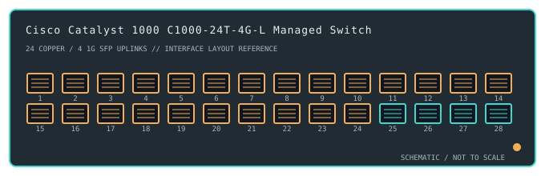

[ MODEL-SPECIFIC NETWORK HARDWARE ]
Cisco Catalyst 1000 C1000-24T-4G-L Managed Switch
A fixed Layer 2 Catalyst access switch with 24 Gigabit Ethernet access ports and four Gigabit SFP uplinks.

IDENTIFICATION: Confirm the complete product label and hardware revision before applying power, firmware or transceiver assumptions. Link and fabric rates below are nominal vendor specifications, not test results.
Detailed specifications and compatibility
| Subcategory | Managed switches |
|---|---|
| Exact product and model | Cisco Catalyst 1000 C1000-24T-4G-L Managed Switch |
| Ports / physical interface | 24 × 10/100/1000BASE-T RJ-45 access interfaces and 4 × 1GbE SFP uplink ports. This T model has no PoE output. |
| Bus and host connection | Standalone rack-mount Catalyst switch; endpoint connectivity is standard switched Ethernet. SFP slots require supported 1GbE optics and compatible remote modules/fiber. |
| Nominal switching performance | Cisco lists 56Gb/s switching bandwidth and 41.67Mpps forwarding for the 24T-4G configuration. These are vendor nominal figures, not measurements made for this archive. |
| Power over Ethernet | No PoE on C1000-24T-4G-L. Power-over-Ethernet is found on distinct C1000-P variants. |
| Management and software | Cisco IOS software provides managed Layer 2 operation and a command-line interface; feature availability and image support depend on exact release and model. No endpoint driver is used. |
| Power and physical form | Rack-mount AC-powered fixed switch with internal supply and active cooling. Use the regional product label and Cisco installation guide for power and clearance. |
| Compatibility | Copper access devices can negotiate up to 1Gb/s; SFP ports are 1GbE, not SFP+ 10GbE. Apply compatible Cisco-supported transceivers and matching optical media; manage through supported IOS CLI and out-of-band/console access as documented. |
| Variant identification | The complete PID C1000-24T-4G-L identifies non-PoE hardware with 24 copper and four 1GbE SFP interfaces. It differs from 24P and 24FP models and from eight-port C1000 products. |
| Measured throughput | No physical sample was benchmarked for this record. Nominal line rate and switching-fabric ratings are not measured application throughput. |
Revision-specific use notes
The complete PID C1000-24T-4G-L identifies non-PoE hardware with 24 copper and four 1GbE SFP interfaces. It differs from 24P and 24FP models and from eight-port C1000 products.
Copper access devices can negotiate up to 1Gb/s; SFP ports are 1GbE, not SFP+ 10GbE. Apply compatible Cisco-supported transceivers and matching optical media; manage through supported IOS CLI and out-of-band/console access as documented.
Cisco IOS software provides managed Layer 2 operation and a command-line interface; feature availability and image support depend on exact release and model. No endpoint driver is used.
Archival, ESD and preservation notes
Record the full SKU and hardware revision, serial/date code, firmware release, supply label, installed transceiver identifiers and physical port test results. Keep configuration backups free of credentials and private network details.
Disconnect mains and attached PoE loads before service. Keep optics capped and store transceivers separately with their wavelength, fiber mode and part number recorded.
Manufacturer sources
- Cisco Catalyst 1000 Series support and model documentationManufacturer product or model-specific technical documentation. Verify the exact SKU, hardware revision, region and firmware.
- Cisco Catalyst 1000 Series product/support informationManufacturer product or model-specific technical documentation. Verify the exact SKU, hardware revision, region and firmware.
Confirm the source's revision/region applicability against the item label. Manufacturer link rates and capacity ratings are not measurements of application-level throughput.